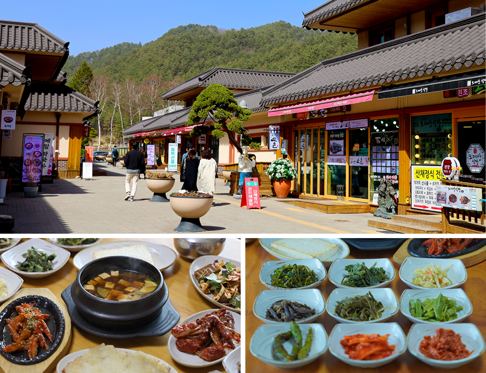
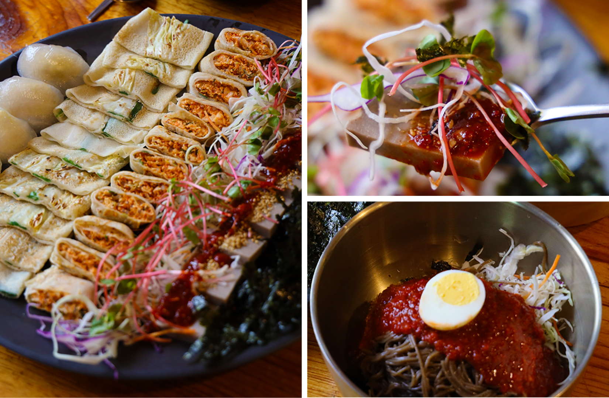

[싱싱여름] 오대산 먹거리마을
평창 오대산 자락에는 숲이 뿜어내는 신선한 공기의 향긋함과 함께 코를 자극하는 고소한 음식 냄새를 풍기는 거리가 있다. 바로 [오대산 먹거리마을]이다. 깨끗한 땅에서 시원한 강원도 바람을 맞으며 자란 식재료들로 만든 건강한 한 끼를 먹을 수 있는 곳이다. 많은 사람들이 평창을 생각했을 때 쉽게 떠올리는 식재료는 ‘메밀’일 것이다. 하지만 평창에는 메밀 말고도 숨겨진 보물이 더 있다. 평창이 자랑하는 또 다른 보물은 바로 ‘황태’이다. 평창의 황태가 맛있을 수밖에 없는 이유는 추운 겨우내 차가운 강원도의 산바람을 맞으며 얼었다가 다시 녹기를 반복했기 때문이다. 인고의 시간을 보낸 황태는 우리의 밥상에서 진가를 발휘한다.
인간에게 제철 음식만큼 좋은 것이 또 있을까? 자연이 주는 선물을 오감으로 느끼며 맛있는 한 끼를 먹을 수 있다. 오대산 먹거리마을은 월정사 전나무숲길이 가까이 위치해 있어 여행 전후로 식후 소화를 위한 산책으로도 좋고 평창 택시투어 코스에도 포함이 되어있다. 여행에 대한 기대감을 안고 출발하기 전 건강한 재료들로 차려진 다채로운 한상으로 평창을 맛보는 것을 추천한다.
[싱싱가을] 효석문화마을 메밀음식거리
메밀꽃 향기가 가득 풍기는 평창에선 사계절 내내 메밀로 만든 다양한 음식들을 맛볼 수 있다. 평창이 자부하는 메밀로 만든 국수와 전 등 메밀향 가득한 한상을 맛볼 수 있다. 평창의 깨끗한 자연이 키워낸 신선한 메밀로 만들어낸 음식을 먹는 것만으로도 건강해지는 기분을 느낄 수 있다. 요즘은 메밀국수나 메밀전뿐만 아니라 메밀로 만든 다양한 음식이 많아 취향에 맞게 음식을 고를 수 있다. 메밀이 가진 매력을 요리 이외에도 커피나 디저트 등으로 만들어낸 카페들도 주변에 위치해 있어서 식사 후 메밀로 만든 다양한 디저트와 커피를 맛보는 것도 또 다른 재미이다. 메밀로 만든 음식부터 디저트까지 같은 재료이지만 다른 매력을 느껴볼 수 있다.
효석문화마을 메밀음식거리는 사계절 언제든 맛있는 메밀음식을 맛볼 수 있긴 하지만 메밀음식 거리가 가장 빛을 발하는 계절은 아무래도 가을이 아닐까 싶다. 9월 초에 열리는 효석문화제는 관광객들뿐만 아니라 지역 주민들이 사랑하는 축제이기도 하다. 그만큼 다양한 행사가 준비되어 알차게 문화생활을 즐길 수 있다. 또 메밀꽃이 만발한 꽃밭은 소설 속에 들어와 있는 것 같은 황홀한 느낌마저 준다. 봄에 피는 꽃들과는 다르게 화려하진 않지만 밤하늘을 수놓은 별처럼 메밀꽃은 은은한 아름다움을 지니고 있다. 넓은 메밀밭 가득 하얀 꽃을 피워낸 메밀꽃들은 바라보는 것만으로도 행복해진다. 아름다운 풍경을 바라보며 한 번 그리고 향긋한 메밀꽃향에 또 한 번 메밀꽃의 매력에 취할 수 있다.

양떼목장, 하늘목장, 삼양목장, 순수 양떼목장 등 다양한 목장 있는데 각 목장마다 입장료나 제공하는 서비스가 조금 달라서 방문 전에 자신이 원하는 조건에 맞게 선택하여 목장을 방문하는 것을 추천한다. 목장에서는 양떼몰이, 동물 먹이주기 체험 등 동물들과 다양한 체험을 해 볼 수 있어서 아이들에게 체험학습으로 제격이기도 하다. 목장마다 이용할 수 있는 것들의 차이는 있지만 어느 목장을 가도 대관령의 광활하고 아름다운 풍경을 즐길 수 있는 것은 마찬가지이니 방문 전 꼼꼼히 차이점을 알아보고 가는 것을 추천한다.